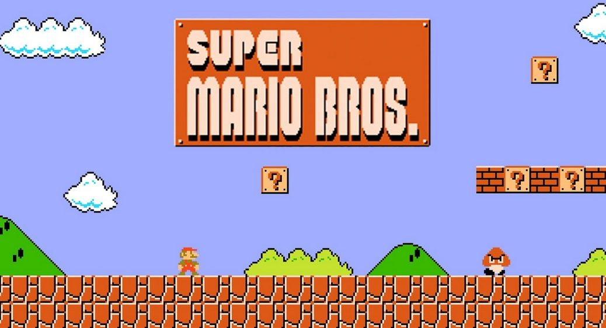

Genetic algorithm trained Mario bros player agent
In this project, I embarked on the challenge of creating an artificial intelligence agent capable of learning how to play a level of the popular game Mario Bros. After extensive research, I decided that the most effective approach would be to utilize a genetic inheritance algorithm. This algorithm allowed the AI agent to play the game repeatedly, gradually evolving and generating new generations of strategies that progressively improved in solving the level.
Genetic inheritance algorithms, or genetic algorithms, operate by creating a population of many Mario characters in a game environment. These Marios undergo training and iterations, with each generation attempting to outperform the previous one. Many Marios do not make it through the training, as they "die" during the process. However, the fittest Marios, those that perform better, are selected to create the next generation through crossover and mutation operations. This cycle continues until the algorithm evolves Mario characters that excel at the game. After this training process, you can showcase a video of the Marios in action, demonstrating their progression and improved performance over time, highlighting the effectiveness of genetic algorithms in game strategy development.